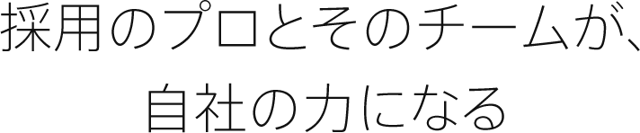
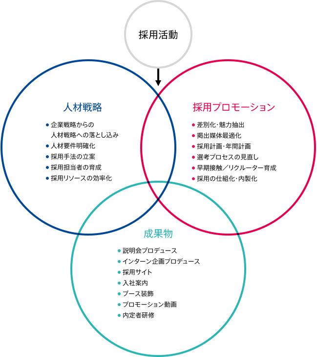

新卒採用活動の課題を探り出し、解決し、仕組化する。
目指していただくのは、プロのコンサルタント知識を企業に移乗したうえでの自社運用です。
イーディアスの使命は、企業の新卒採用課題を解決することはもちろん、担当者の負担を減らし、
採用活動を仕組化すること。イーディアスのコンサルタントが持つ知恵を企業に移乗したうえで、
自社運用できる体制をつくることです。
潜在的な採用課題の抽出から戦略立案と実行、運用までを行い、
定期訪問によるモニタリングで改善提案し、幅広い情報と判断材料を提供。
企業に体制ができるまでを、採用コンサルタントを中心としたチームでサポートいたします。
これまで企業が手の回らなかった“やるべきこと”を実現。
寄り添って採用力を高めていくことで、これから長期に渡って活用できる“採用ノウハウ”をご提供します。
